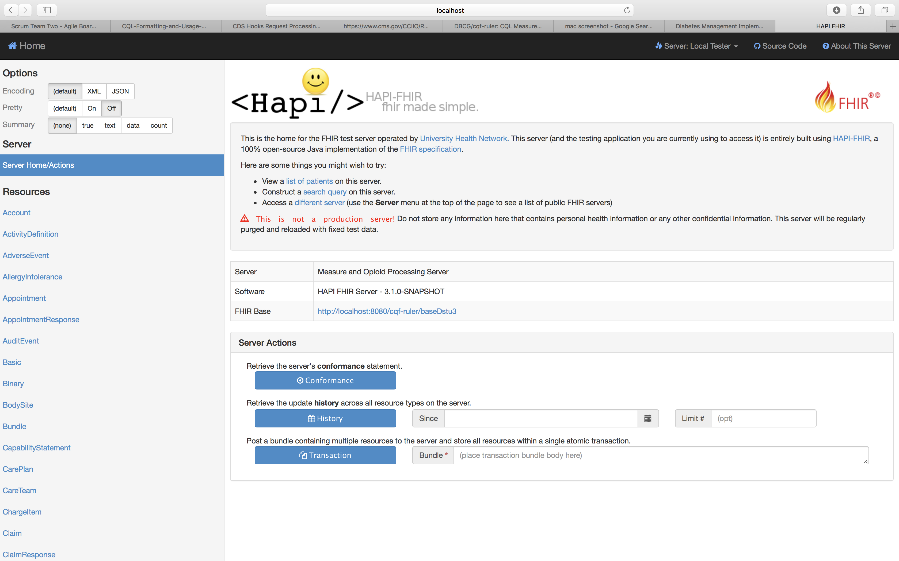
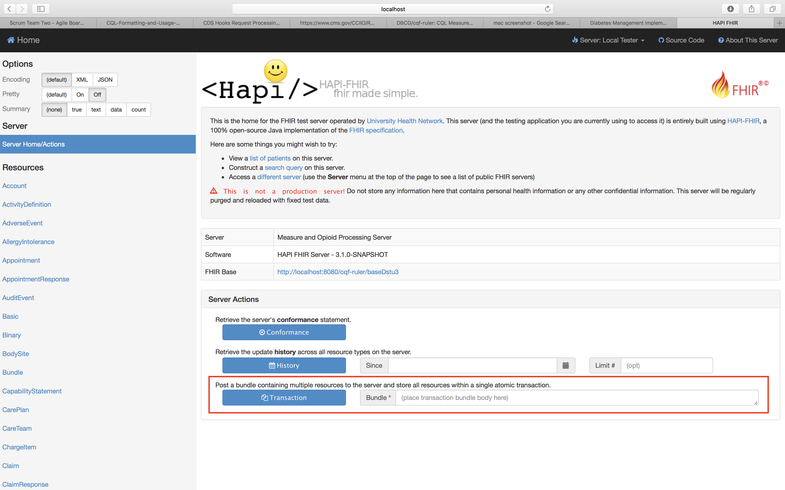
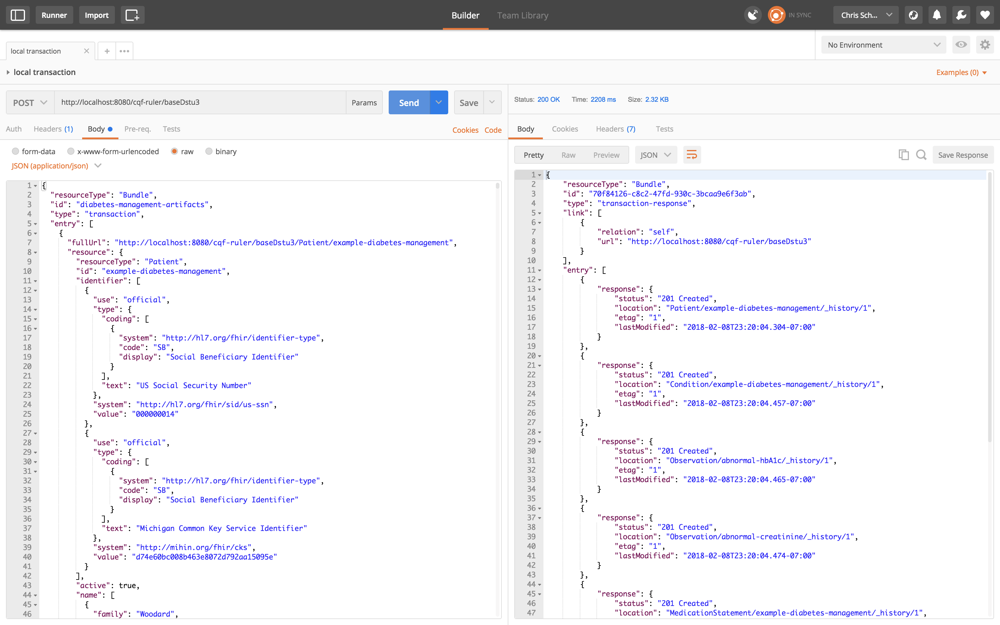

This section of the Implementation Guide details the steps necessary to execute the test data.
It is assumed that the CQF Ruler will be used to execute the test data provided in this guide. Follow the instructions in the CQF Ruler's README to build the project and start the server. If the CQF Ruler does not suit your needs, or is in some other way inadequate, please refer to the Implementation Documentation for information on how to setup a system suitable to execute the diabetes-management logic.
Once you have a local instance of the CQF Ruler running - you may also use the public server - you will need to load the test bundles. There are 2 ways to accomplish this:
Navigate the the CQF Ruler's UI page. If your local instance is running on port 8080, the URL would be http://localhost:8080/cqf-ruler/tester/. You should see a page like the following:
Next, copy-and-paste each test bundle (one at a time) into the Transaction Bundle field in the "Server Actions" window on the home page and select the "Transaction" button.
POST each bundle (one at a time) to the base URL of the server using an HTTP client. If your local instance is running on port 8080, the base URL would be http://localhost:8080/cqf-ruler/baseDstu3. The following screen shot is an example transaction using Postman, a powerful HTTP client.
Now that the environment is setup and the test data is loaded into the server, we are now ready to invoke the diabetes-management hook. The CQF Ruler employs the CDS Hooks specification to invoke decision support. CDS Hooks dictates that a stable endpoint must be provided by the CDS service to inform users of available services and the required data required to invoke it. The following is an example of how the CQF Ruler's CDS services can be "discovered" at the following endpoint, assuming your local instance is running on port 8080:
GET http://localhost:8080/cqf-ruler/cds-services
{
"services": [
{
"hook": "medication-prescribe",
"prefetch": {
"medication": "MedicationOrder?patient={{Patient.id}}&status=active"
},
"name": "Opioid Morphine Milligram Equivalence (MME) Guidance Service",
"description": "CDS Service that finds the MME of an opioid medication and provides guidance to the prescriber if the MME exceeds the recommended range.",
"id": "cdc-opioid-guidance"
},
{
"hook": "patient-view",
"prefetch": {
"patient": "Patient/{{Patient.id}}"
},
"name": "Zika Virus Intervention",
"description": "Identifies possible Zika exposure and offers suggestions for suggested actions for pregnant patients",
"id": "zika-virus-intervention"
},
{
"hook": "patient-view",
"prefetch": {
"Eye Exams": "Observation?patient={{Patient.id}}&code=20010",
"Diabetes Conditions": "Condition?patient={{Patient.id}}&code=250.00,E11.9,313436004,73211009",
"patient": "Patient/{{Patient.id}}",
"ACE or ARB Medications": "MedicationStatement?patient={{Patient.id}}&code=999996",
"Creatinine Labs": "Observation?patient={{Patient.id}}&code=20005",
"Foot Exams": "Observation?patient={{Patient.id}}&code=20009",
"LDL Labs": "Observation?patient={{Patient.id}}&code=20007",
"MicroalbCr Labs": "Observation?patient={{Patient.id}}&code=20008",
"HbA1C Labs": "Observation?patient={{Patient.id}}&code=20006"
},
"name": "Diabetes Management",
"description": "Identifies abnormal lab results and makes suggestions for service requests for diabetic patients",
"id": "diabetes-management"
}
]
}
We want to call the diabetes-management service. The data requirements of the library or libraries associated with the diabetes-management hook are included in the prefetch structure. The calling system may optionally populate the prefetch using the provided query string to search for the corresponding resources within their data provider. The id specifies the path to access the service with a CDS Request, as the following example illustrates:
POST http://localhost:8080/cqf-ruler/cds-services/diabetes-management
{
"hookInstance": "d1577c69-dfbe-44ad-ba6d-3e05e953b2ea",
"fhirServer": "http://localhost:8080/cqf-ruler/baseDstu3",
"hook": "patient-view",
"user": "Practitioner/example",
"context": [],
"patient": "Patient/example-diabetes-management",
"prefetch": {}
}
In this example, the prefetch is not populated. Therefore, the CQF Ruler will retrieve the data requirements from the data provider specified in the request (fhirServer). Then the CQF Ruler will apply the PlanDefinition associated with the diabetes-management hook for the specified patient and return information cards and/or suggestions to aid the user in making informed decisions. The following example shows a CDS response from the diabetes-management service:
POST http://localhost:8080/cqf-ruler/cds-services/diabetes-management
Content-Type: application/json
{
"cards": [
{
"summary": "Abnormal Creatinine level detected in most recent lab results",
"indicator": "warning",
"detail": "The Creatinine level of 122umol/L in the most recent lab is considered abnormal",
"suggestions": [
{
"actions": [
{
"description": "The Creatinine level of 122umol/L in the most recent lab is considered abnormal"
}
]
}
]
},
{
"summary": "Abnormal HbA1C level detected in most recent lab results",
"indicator": "warning",
"detail": "The HbA1C level of 15.2mmol/L in the most recent lab is considered abnormal",
"suggestions": [
{
"actions": [
{
"description": "The HbA1C level of 15.2mmol/L in the most recent lab is considered abnormal"
}
]
}
]
},
{
"detail": "Patient is due for a Creatinine Lab",
"suggestions": [
{
"actions": [
{
"description": "Patient is due for a Creatinine Lab",
"resource": {
"resourceType": "ProcedureRequest",
"id": "042ee077-57be-4912-85f5-d893d4940bda",
"status": "draft",
"intent": "order",
"code": {
"coding": [
{
"system": "http://www.ama-assn.org/go/cpt",
"code": "82570",
"display": "Assay of Urine Creatinine"
}
]
},
"subject": {
"reference": "Patient/example-diabetes-management"
}
}
}
]
}
]
}
]
}